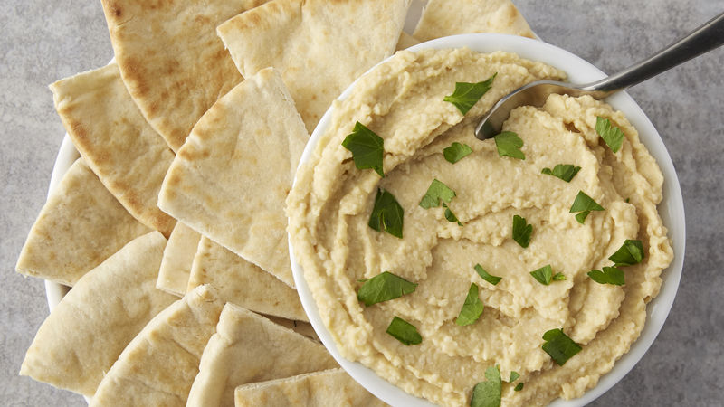

Hummus
Ingredientes:
- 1 a 2 limões espremidos
- 1/3 de xícara de tahini
- 1 a 2 dentes de alho
- Sal a gosto
- 3 colheres de sopa de azeite
- 2 xícara de grão de bico cozido
- 1/4 de xícara de água
Modo de Preparo:
Coloque todos os ingredientes líquidos em um processor, em seguida, os sólidos. Bata até obter uma consistência pastosa. Caso o hummus esteja muito grosso, adicione a água e continue batendo. Coloque em um recipiente e regue com azeite.